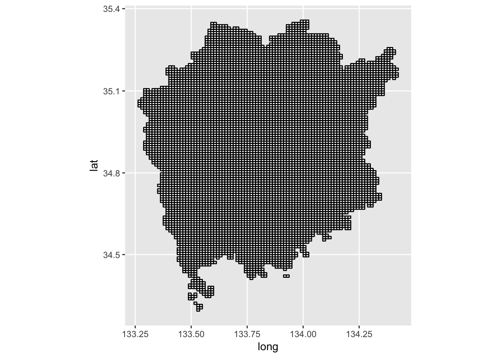
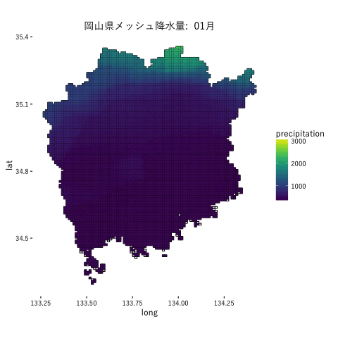

標準地域メッシュによる地図の塗り分け
前回の記事でGeohashをRから取得して可視化まで行ったが、日本には地域区画のための標準機構として「標準地域メッシュ」と呼ばれるものがある。今回は前回に引き続いて、緯度経度のメッシュ区画化を、この標準地域メッシュで行ってみる。
前回の記事でGeohashをRから取得して可視化まで行ったが、日本には地域区画のための標準機構として「標準地域メッシュ」と呼ばれるものがある。
これはGeohashのように対象の緯度経度区画を数値化したもので、第1次地域区画（4桁）、第2次地域区画（6桁）、第3次地域区画（8桁）となるにつれ細かな領域を指すようになる。特に第3次地域区画は標準地域メッシュあるいは基準メッシュと呼ばれ、全国的規模での調査における区画を表現するために用いられている。
今回は前回に引き続いて、緯度経度のメッシュ区画化を、この標準地域メッシュで行ってみる。まずは用いるパッケージを読み込んでおく。
library(pacman)
p_load(magrittr, foreach) # 補助系
p_load(readr, dplyr, tidyr, kokudosuuchi, jpmesh) # データ取得、データ処理
# devtools::install_github("yutannihilation/kokudosuuchi")
p_load(sp, rgdal, geojsonio) # 地理データ処理
p_load(ggplot2, viridis, gganimate) # 可視化
library(purrr)
library(tibble)
library(broom)メッシュコードの入手と領域の定義
標準地域メッシュはおよそ1辺の長さが1kmとなっており、日本の領域を全て覆うと40万近くになる。それだけ多いと日本全体を標準地域メッシュで表そうとすると細かいので、今回は都道府県単位のメッシュコードを用いる。各都道府県のメッシュコードは総務省統計局によりcsvファイルとして公開されており、それを利用する。なお今回の対象にするのは岡山県とする。
# 総務省統計局からのファイルのダウンロード
dir.create("data/20160809_mesh_code_mapping")
download.file("http://www.stat.go.jp/data/mesh/csv/city-mesh_33.csv",
destfile = "data/20160809_mesh_code_mapping/city-mesh_33.csv")
# csvファイルの読み込み
# 市区町村ごとにメッシュコードが与えられているため、メッシュコードの列だけを選択し、
# ユニークな値にする
df.pref <- read_csv("data/20160809_mesh_code_mapping/city-mesh_33.csv",
locale = locale(encoding = "cp932")) %>%
select(mesh_code = `基準メッシュコード`) %>%
unique() %>%
arrange(mesh_code)続いてメッシュコードを緯度経度に変換する。ここで用いているmeshcode_to_latlong()という関数は、竹中明夫さんのRコードを参考にちょっと手を加えたもの。前回同様、{purrr}とtidyr::unnest()の組み合わせが有効。そして緯度経度の誤差範囲から、各メッシュの領域を示す４点の緯度経度を求める。
df.pref %<>%
# メッシュコードを緯度経度に変換
mutate(mesh_area = map(mesh_code, meshcode_to_latlon)) %>%
unnest() %>%
# メッシュコードを覆う長方形の角の座標を取得
mutate(lng1 = long_center - long_error,
lat1 = lat_center - lat_error,
lng2 = long_center + long_error,
lat2 = lat_center + lat_error) %>%
# 後の処理のため行番号を与えておく
rownames_to_column()前回のように{leaflet}で長方形を可視化するのであればこのデータを用いると良い。以下コードだけ載せておく。
library(leaflet)
leaflet() %>%
addTiles() %>%
setView(lng = df.pref$long_center[1216], lat = df.pref$lat_center[1216], zoom = 15) %>%
addRectangles(lng1 = df.pref$lng1[1216],
lat1 = df.pref$lat1[1216],
lng2 = df.pref$lng2[1216],
lat2 = df.pref$lat2[1216])ポリゴンの作成
メッシュをカバーするポリゴンを作成する。メッシュの各点を示す座標を次のように与えていくことで、長方形を描画するPolygonsクラスオブジェクトが作成されるので、これを全てのメッシュコードに対して実行していく。
Polygons(
list(Polygon(
cbind(
# 順番に注意
c(df.pref$lng1[1], df.pref$lng1[1], df.pref$lng2[1], df.pref$lng2[1], df.pref$lng1[1]),
c(df.pref$lat2[1], df.pref$lat1[1], df.pref$lat1[1], df.pref$lat2[1], df.pref$lat2[1])))),
# IDにはメッシュコードを用いる
df.pref$mesh_code[1])
## An object of class "Polygons"
## Slot "Polygons":
## [[1]]
## An object of class "Polygon"
## Slot "labpt":
## [1] 133.53125 34.29583
##
## Slot "area":
## [1] 0.0001041667
##
## Slot "hole":
## [1] FALSE
##
## Slot "ringDir":
## [1] 1
##
## Slot "coords":
## [,1] [,2]
## [1,] 133.5250 34.30000
## [2,] 133.5375 34.30000
## [3,] 133.5375 34.29167
## [4,] 133.5250 34.29167
## [5,] 133.5250 34.30000
##
##
##
## Slot "plotOrder":
## [1] 1
##
## Slot "labpt":
## [1] 133.53125 34.29583
##
## Slot "ID":
## [1] "51333452"
##
## Slot "area":
## [1] 0.0001041667list.polygons <- foreach(i = 1:nrow(df.pref)) %do% {
Polygons(
list(Polygon(
cbind(
c(df.pref$lng1[i], df.pref$lng1[i], df.pref$lng2[i], df.pref$lng2[i], df.pref$lng1[i]),
c(df.pref$lat2[i], df.pref$lat1[i], df.pref$lat1[i], df.pref$lat2[i], df.pref$lat2[i])))),
df.pref$mesh_code[i])
}できたPolygonsクラスオブジェクトを次のようにしてjson形式に変換したのち、readOGR()によりSpatialPolygonsDataFrameクラスオブジェクトにし、{broom}パッケージのtidy()関数でデータフレーム化。ここら辺の処理はQiitaに書いた【まとめ用】ggplot2を使って地図を書くという記事を参考。
map <- SpatialPolygons(Srl = list.polygons, pO = 1:nrow(df.pref)) %>%
geojson_json(geometry = "polygon") %>%
readOGR(dsn = .,
layer = "OGRGeoJSON",
stringsAsFactors = FALSE) %>%
tidy(.)描画はいつもの{ggplot2}。メッシュが細かいのでほとんど黒く塗りつぶされているようになった。
plot_map <- ggplot() +
geom_map(data = map,
map = map,
aes(x = long, y = lat, map_id = id),
fill = "white", color = "black") +
coord_map(projection = "mercator")
plot_map
平均値メッシュによる塗り分け
さていよいよ本題。せっかく標準地域メッシュでの地図の塗り分けを行ってみる。今回は国土数値情報が提供している「平均値メッシュデータ」 http://nlftp.mlit.go.jp/ksj/gml/datalist/KsjTmplt-G02.html を使う。概要は下記の通り
降水量、気温、最深積雪、日照時間、全天日射量の５種類の気象要素について、過去30年間の観測値から1kmメッシュ（3次メッシュ）ごとの平年値を推定・算出したものである。
ファイルのダウンロードは省略。岡山県が該当する第1次地域区画の６メッシュをダウンロードしてくる。なお国土数値情報のデータダウンロードには {kokudosuuchi}パッケージを使うと便利。
Rから国土数値情報ダウンロードサービス Web APIを使うパッケージをつくりました - Technically, technophobic.
df <- getKSJSummary()
filter(df, stringr::str_detect(title, "平年値メッシュ"))
urls <- getKSJURL("G02") %>% filter(areaCode %in% c(5333, 5334, 5233, 5234, 5133, 5134)) %>% use_series(zipFileUrl)KsjTmplt.5133 <- readOGR("data/20160809_mesh_code_mapping/160808_平均値メッシュ_33_岡山県/G02-12_5133-jgd_GML/G02-12_5133-jgd.shp", "G02-12_5133-jgd")
KsjTmplt.5134 <- readOGR("data/20160809_mesh_code_mapping/160808_平均値メッシュ_33_岡山県/G02-12_5134-jgd_GML/G02-12_5134-jgd.shp",
"G02-12_5134-jgd")
KsjTmplt.5233 <- readOGR("data/20160809_mesh_code_mapping/160808_平均値メッシュ_33_岡山県/G02-12_5233-jgd_GML/G02-12_5233-jgd.shp",
"G02-12_5233-jgd")
KsjTmplt.5234 <- readOGR("data/20160809_mesh_code_mapping/160808_平均値メッシュ_33_岡山県/G02-12_5234-jgd_GML/G02-12_5234-jgd.shp",
"G02-12_5234-jgd")
KsjTmplt.5333 <- readOGR("data/20160809_mesh_code_mapping/160808_平均値メッシュ_33_岡山県/G02-12_5333-jgd_GML/G02-12_5333-jgd.shp",
"G02-12_5333-jgd")
KsjTmplt.5334 <- readOGR("data/20160809_mesh_code_mapping/160808_平均値メッシュ_33_岡山県/G02-12_5334-jgd_GML/G02-12_5334-jgd.shp",
"G02-12_5334-jgd")変数名は http://nlftp.mlit.go.jp/ksj/gml/codelist/ClimateCd.html のものと対応している。例えばメッシュコードはG002_001という変数に格納されている。今回は降水量のデータをマッピングしてみることにするので、必要な変数を選択してくる。
# http://nlftp.mlit.go.jp/ksj/gml/codelist/ClimateCd.html
KsjTmplt.5133@data %>% names()
## [1] "G02_001" "G02_002" "G02_003" "G02_004" "G02_005" "G02_006" "G02_007"
## [8] "G02_008" "G02_009" "G02_010" "G02_011" "G02_012" "G02_013" "G02_014"
## [15] "G02_015" "G02_016" "G02_017" "G02_018" "G02_019" "G02_020" "G02_021"
## [22] "G02_022" "G02_023" "G02_024" "G02_025" "G02_026" "G02_027" "G02_028"
## [29] "G02_029" "G02_030" "G02_031" "G02_032" "G02_033" "G02_034" "G02_035"
## [36] "G02_036" "G02_037" "G02_038" "G02_039" "G02_040" "G02_041" "G02_042"
## [43] "G02_043" "G02_044" "G02_045" "G02_046" "G02_047" "G02_048" "G02_049"
## [50] "G02_050" "G02_051" "G02_052" "G02_053" "G02_054" "G02_055" "G02_056"
## [57] "G02_057" "G02_058" "G02_059" "G02_060" "G02_061" "G02_062" "G02_063"
## [64] "G02_064" "G02_065" "G02_066" "G02_067" "G02_068" "G02_069" "G02_070"
## [71] "G02_071" "G02_072" "G02_073" "G02_074" "G02_075" "G02_076" "G02_077"
## [78] "G02_078" "G02_079" "G02_080" "G02_081" "G02_082" "G02_083" "G02_084"
KsjTmplt.5133@data$G02_001[1]
## [1] 51330000
## 4181 Levels: 51330000 51330001 51330002 51330003 51330004 ... 51337799df.KsjTmplt <- bind_rows(KsjTmplt.5133@data, KsjTmplt.5134@data,
KsjTmplt.5233@data, KsjTmplt.5234@data,
KsjTmplt.5333@data, KsjTmplt.5334@data)# 岡山県に含まれるメッシュだけを抽出
# メッシュコードおよび降水量のデータを収める変数を選択、
# 月を表す変数名に変更
df.KsjTmplt %<>% filter(G02_001 %in% unique(map$id)) %>%
select(G02_001, one_of(sprintf("G02_%03d", 2:13))) %>%
set_colnames(c("G02_001", sprintf("%02d月", 1:12)))
df.KsjTmplt %<>% gather(month, precipitation, -G02_001)マッピング。せっかくなので {gganimate}パッケージを使ってgif画像化。月別の降水量の推移を描画する。
quartzFonts(YuGo = quartzFont(rep("YuGo-Medium", 4)))
theme_set(theme_classic(base_size = 12, base_family = "YuGo"))
p <- plot_map + geom_map(data = df.KsjTmplt,
map = map,
aes(fill = precipitation, map_id = G02_001, stat = "identity", frame = month)) +
ggtitle("岡山県メッシュ降水量: ") +
scale_fill_viridis()
gg_animate(p, "160809_mesh_code_mapping_okayama_pref_precipitation.gif")
岡山県は、特に南部は瀬戸内海式気候で降水量が少ないことで有名だが、こうして地図に落としてみることで細かな挙動をみるのも楽しい。
Enjoy!
Share this post
Twitter
Google+
Facebook
Reddit
LinkedIn
StumbleUpon
Email